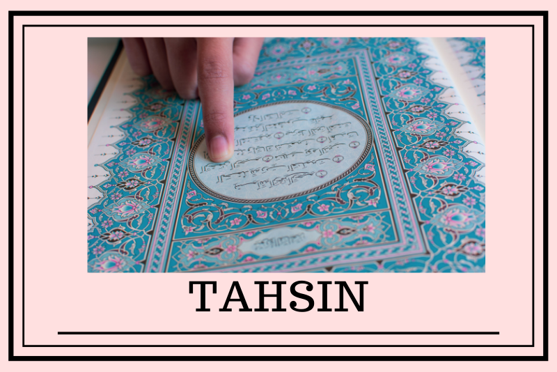

Tahsin

Istilah tahsin diartikan sebagai melafalkan setiap huruf dari tempat keluarnya masing-masing sesuai haq dan mustahaqnya. Secara singkat orang lebih mengenal tahsin dengan istilah tajwid atau membaguskan dan memperbaiki bacaan.
Membaca Alquran dengan tahsin mampu memelihara Alquran dari kesalahan. Membaca Alquran tanpa tahsin bisa jadi merusak lafaz Alquran yang berujung pada perubahan kandungan makna kata.
"Makna yang salah akan menyesatkan banyak orang," ungkap ustaz Muamar AS, instruktur Tahsin Qira'ah LTTQ Masjid Fathullah UIN Jakarta dalam acara bedah buku Alquran Tahsin di Jakarta.
Karena itu belajar membaca Alquran menjadi jalan utamanya. Dan di era perkembangan teknologi sekarang ini, belajar Alquran semakin mudah. Salah satunya dengan Alquran digital.
Tilawah
Tilawah secara istilah adalah membaca Al Qur'an dengan bacaan yang menampakkan huruf-hurufnya dan berhati-hati dalam melafadzkannya agar lebih mudah untuk memahani makna-makna yang terkandung di dalamnya.
Arti Tilawah menurut bahasa adalah BACAAN atau MEMBACA. Kata Tilawah ini sendiri mengakar pada kata dalam bahasa Arab yakni TALA dan TILAWATAN yang artinya kurang lebih adalah BACAAN.
Sementara secara harfiah, arti dari tilawah adalah kegiatan dalam membaca kitab suci Al-Quran dengan cara menampakkan serta melafadzkan huruf di dalamnya dengan hati-hati dan indah. Ulama menambahkan bahwa tilawah ini dilaksanakan dengan memahami pula makna dari ayat-ayar Al-Quran yang dibaca tersebut.
Kata Tilawah ini sudah diserap dengan baik oleh Bahasa Indonesia dengan penulisan baku TILAWAH. Adapun pemaknaan tilawah oleh Kamus Besar Bahasa Indonesia adalah Pembacaan ayat suci Al-Quran dengan baik lagi indah.
Tajwid
Secara istilah, tajwid menurut para ulama ahli Al Qur'an adalah mengucapkan setiap huruf dari makhraj (tempat keluarnya huruf) dengan benar, dengan menunaikan seluruh hak-nya (sifat absolut huruf yang selalu menempel misalnya hams, jahr, isti'la, dll) dan menunaikan seluruh mustahak-nya (sifat kondisonal huruf yang sewaktu-waktu ada semisal idzhar, iqlab, ikhfa', dll) dengan tanpa berlebihan dan tanpa takalluf (mempersulit diri) serta tanpa ta'assuf (semaunya sendiri).
Yang dimaksud dengan hak huruf adalah sifat yang senantiasa menempel pada huruf, seperti al-jahr, isti'la, dan lain-lain. Sedangkan mustahak huruf adalah sifat yang nampak sewaktu-waktu seperti tafkhim, tarqiq, ikhfa, idgham, dan lain-lain.
Secara bahasa, tajwid berasal dari kata جَوّدَ - يُجَوِدُ - تَجْوِيْدًا yang bermakna memperbagus atau memperbaiki.
Imam Abu Amr Ad-Dani menjelaskan mengenai perkara yang hendaknya dijauhi para ahli Al Qur'an ketika mengajarkan Al Qur'an, beliau berkata: Tajwid bukanlah dengan mengunyah-ngunyah lidah, bukan memperdalam mulut, bukan membengkok-bengkokkan dagu, bukan menggetar-getarkan suara, bukan memulurkan syiddah, bukan memotong-motong madd, bukan memperpanjang dengung ghunnah, bukan menggemukkan ra', bukan bacaan yang dijauhi karakter manusia nomal, bukan pula bacaan yang ditolak telinga dan hati nurani. Akan tetapi, tajwid adalah bacaan yang mudah, enak, manis, lembut, tanpa menungyah-ngunyah, tanpa mengulum-ngulum, tanpa ta'assuf, tanpa takalluf, tanpa dibuat-buat, tanpa berlebihan, dan tidak keluar dari karakter normal orang arab dan ucapan orang-orang yang fasih dari segala aspek qiraat dan ada'.
Seorang bisa sampai pada tajwid dengan memperbanyak latihan dan talaqqi (bertemu langsung dengan guru) dari guru yang mutqin (menguasai ilmunya) dan ahli mengajar.
Tahfidz
Tahfizh Al-Qur’an (ada juga yang mengikuti penulisan tahfidz) terdiri dari dua kata, yaitu tahfizh dan Al-Qur’an. Tahfidz adalah kata تَحْفِيْظًا yang berasal dari bahasa Arab bentuk mashdar ghair mim dari kata حَفَّظَ – يُحَفِّظُ – تَحْفِيْظًا yang mempunyai arti “menghafal”. Menghafal dapat diartikan sebagai proses pengulangan suatu pelajaran, baik dengan membaca, maupun mendengar. Maka definisi tahfizh Al-Qur’an / menghafal Al-Quran, yaitu proses menghafal Al-Qur’an baik dengan cara membaca maupun mendengarkannya secara berulang-ulang sampai hafal sehingga setiap ayat mampu dibaca tanpa melihat mushaf.
Tahfidz Al Quran terdiri dari dua kata yang masing masingnya memiliki arti yang berbeda. Kata Tahfidz memiliki arti sebagai menghafal yang berasal dari bahasa Arab, Hafidza yahfadzu hifdzan yang merupakan lawan dari lupa yaitu selalu mengingat dan sedikit terlupa. Menurut Aldul Aziz Abdul Ra’uf menghafal merupakan proses mengulang sesuatu, dilakukan dengan membaca maupun mendengar. Dimana pekerjaan yang selalu diulang akan menjadi hafal.
Tadabbur
Tadabbur (mendalami, memahami) adalah hal yang sangat penting untuk diterapkan dalam kehidupan di dunia. Dengan menerapkan tadabbur, hidup akan menjadi lebih tenang dan tenteram. Selain itu, Allah SWT juga menyukai orang-orang yang melakukan tadabbur dengan tujuan untuk mencapai kebaikan. Oleh sebab itu, pengetahuan akan tadabbur sangat diperlukan agar bisa menerapkannya dengan baik.
Tadabbur berasal dari kata dabbur yang memiliki makna akhir dari sesuatu. Kemudian, kata tersebut berkembang menjadi tadabbur yang mempunyai makna memperhatikan kesudahan suatu perkara dan kemudian memikirkan akibatnya. Tadabbur sendiri dilakukan untuk merenungkan semuanya yang kita lakukan, bagian-bagian, hal yang mendahului, dan perkara yang mengikutinya. Dengan tadabbur, kita akan menjadi lebih berhati-hati dalam berbuat sesuatu.
Tadabbur bisa diterapkan pada banyak hal, salah satu tadabbur yang sangat penting untuk dilakukan adalah tadabbur Al-Quran. Dengan mentadabburi Al-Quran, diharapkan kita akan menjadi lebih paham akan maknanya dan mengamalkan apa yang ada di dalamnya. Hal ini dikarenakan tidak mungkin seseorang melakukan tadabbur apabila tidak memahami apa yang diucapkannya. Selain itu, penerapan tadabbur juga dilakukan untuk menghindarkan diri dari potensi-potensi untuk melakukan perbuatan dosa.
Tartil
Tartil adalah perlahan-lahan dan tidak tergesa-gesa. Diantaranya, memperhatikan potongan ayat, permulaan dan kesempurnaan makna, sehingga seorang pembaca akan berpikir terhadap apa yang sedang ia baca. Allah Ta’ala berfirman, “Dan bacalah Al-Qur’an itu dengan perlahan-lahan.” (QS. Al-Muzammil: 4).
Berikut beberapa keterangan sahabat tentang makna tartil :
- Ali bin Abi Thalib menjelaskan makna tartil dalam ayat,
”Mentajwidkan huruf-hurufnya dengan mengetahui tempat-tempat berhentinya”. (Syarh Mandhumah Al-Jazariyah, hlm. 13)
- Ibnu Abbas mengatakan,
Dibaca dengan jelas setiap hurufnya.
- Abu Ishaq mengatakan,
Membaca dengan jelas tidak mungkin bisa dilakukan jika membacanya terburu-buru. Membaca dengan jelas hanya bisa dilakukan jika dia menyebut semua huruf, dan memenuhi cara pembacaan huruf dengan benar. (Lisan al-Arab, 11/265).
Inti tartil dalam membaca adalah membacanya pelan-pelan, jelas setiap hurufnya, tanpa berlebihan. (Kitab al-Adab, as-Syalhub, hlm.12)